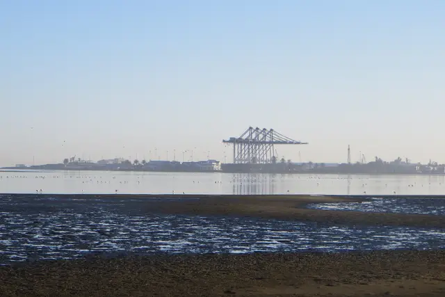
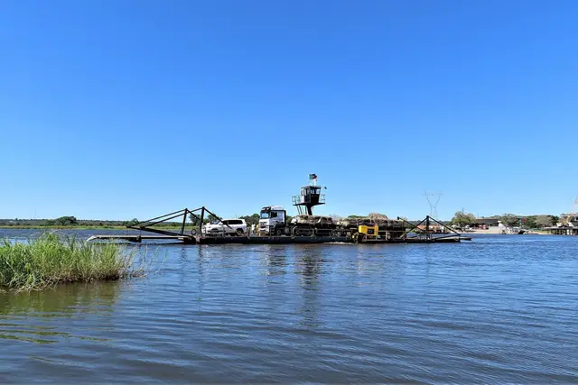

Where we run
One base in Namibia. Seven countries across the border.
Every route starts in Namibia and crosses into one of the SADC countries below, along the region's main road corridors.
Schematic, not to scale. Lines follow the main public road corridors. The actual route is planned per load.
Desert road · Namibia
Route manifest
Destinations and the corridors that reach them.
Tell us your towns and we will confirm the routing.
| Code | Country | Direction from Namibia | Main road corridor |
|---|---|---|---|
| NAM | Namibia | Home base | Port of Walvis Bay and Windhoek |
| AGO | Angola | North | Trans-Cunene |
| BWA | Botswana | East | Trans-Kalahari |
| COD | DR Congo | North-east | Walvis Bay–Ndola–Lubumbashi, through Zambia |
| MOZ | Mozambique | East | Trans-Kalahari, continuing to the Maputo corridor |
| ZAF | South Africa | South and south-east | Trans-Kalahari to Gauteng, or Trans-Oranje to the Cape |
| ZMB | Zambia | North-east | Trans-Caprivi |
| ZWE | Zimbabwe | East | Trans-Caprivi |
Corridors are the main public routes to each country. The border crossing and exact routing depend on the load, the pickup point and conditions on the day.
Along the corridors
Where the roads cross.


How a route gets planned
Planned around the border, not just the destination.
The border post decides the timing: its hours, its paperwork, its queue.
-
Documentation prepared in advance
Sorted before the truck reaches the boom gate.
-
Timing built around border hours
Trucks arrive while the crossing is open.
-
Route knowledge, not a route planner app
Roads, detours and seasons known first-hand.
Destination not listed?